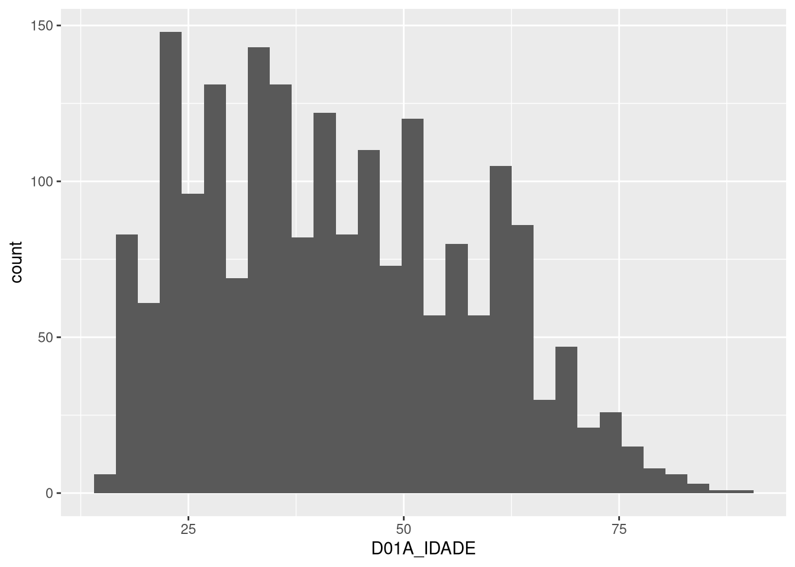
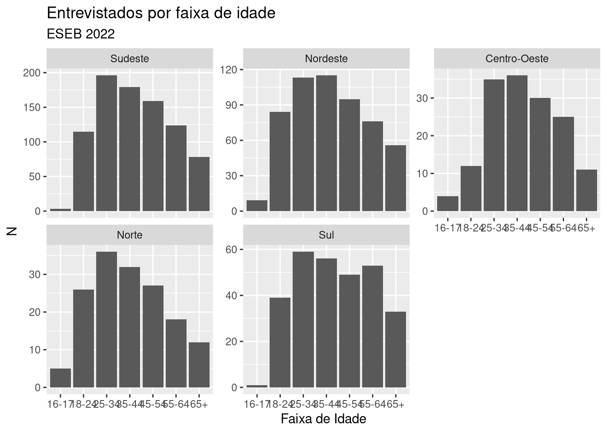
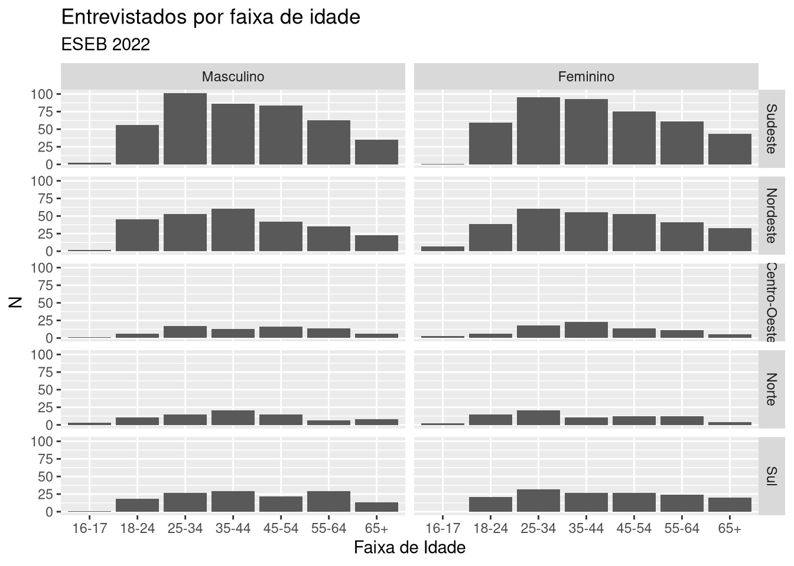

library(tidyverse)4 Visualização
Parte importante do trabalho de análise é a visualização dos nossos dados. Ela pode ser utilizada não só para resumir resultados de pesquisa como, também, para fazer análise exploratória e descobrir padrões. Nesse capítulo, veremos justamente como usar R gerar visualizações que nos ajudem a explorar dados, documentar e exportar resultados de análises.
É possivel gerar visualizações apenas usando R-base, isto é, funcionalidade que já estão disponíveis por padrão no R. No entanto, seguindo que já fizemos em outros capítulos, aqui também adotaremos o tidyverse, particularmente o seu pacote ggplot2, desenvolvido por Wickham (2016) a partir da gramática de grafícos de Wilkinson (2012). A ideia por detrás dessa gramática, adotada pelo ggplot2, é a de que todo gráfico pode ser decomposto em camadas, cada uma delas representando um elemento do gráfico. Abordaremos este tema no capítulo, ainda que brevemente, para facilitar a compreensão da lógica de funcionamento do ggplot2 – pacote que revolucionou o modo de produzir gráficos usando a linguagem R.
Para poder executar os códigos deste capítulo, você precisará carregar o tidyverse:
4.1 Por que usar visualizações?
Dados podem ser apresentados em uma tabela, seja com valores brutos ou resumidos em alguma métrica, como veremos no próximo capítulo. No entanto, como argumentam Kastellec e Leoni (2007), em geral a análise gráfica é mais intuitiva. Compare, por exemplo, a tabela a seguir, que mostra um indicador fictício que varia ao longo dos anos, de 2010 a 2018, com a sua versão gráfica, ao lado:
| ano | indicador1 |
|---|---|
| 2010 | 10 |
| 2011 | 12 |
| 2012 | 15 |
| 2013 | 18 |
| 2014 | 17 |
| 2015 | 22 |
| 2016 | 27 |
| 2017 | 28 |
| 2018 | 29 |
Quando bem feito, um gráfico é capaz mostrar dados de forma precisa, nítida e eficiente suas informações (Healy 2018). Em outras palavras, ele passa a sua mensagem, ou a sua história, sem a necessidade ou o auxílio de um texto.
Para que tenhamos um visual gráfico claro, preciso e eficiente, vale levar em conta algumas observações de Tufte (1983). Para ele, bons gráficos colocam os dados acima de tudo, ou seja, todo e qualquer artifício de design só deve ser feito exclusivamente para ajudar deixar os dados mais nítidos, e não mais obtusos. A ideia de fundo é que devemos nos concentrar na substância dos dados, e não em qualquer outro elemento, como adereços desnecessários ou metodologia usada na produção de um gráfico. Sempre que possível, simplifique.
Outro ponto importante é que uma boa visualização deve conseguir levar aos olhos comparações de diferentes pedaços de dados disponibilizados – sem, contudo, gerar distorções destes mesmos dados, levando em consideração o propósito geral da análise, seja ela exploração ou descrição. Tudo isso considerado, usar visualizações é uma forma de comunicar resultados de forma global, com economia de espaço e, se bem feita, sem perda de precisão.
4.2 Fundamentos do ggplot2
De longe o pacote mais utilizado para produzir visualizações em R, o ggplot21 é baseado na gramática de gráficos, que é uma forma de descrever visualizações por meio de camadas. A ideia é que cada camada representa um elemento do gráfico: os dados usados para produzir formas e determinar escalas dos eixos, geometria, coordenadas, facetas e temas. Essa lógica separa, portanto, diferentes partes da produção de um gráfico, o que abre um universo de possibilidades de combinações entre essas camadas.
O que precisamos para fazer um gráfico no ggplot2? Basicamente, penas determinar quais são os nosso dados e a geometria que vamos usar. Para dar um exemplo inicial, usaremos dados de uma das mais tradicionais pesquisas de opinião do Brasil, o Estudo Eleitoral Brasileiro (ESEB), que é realizada periodicamente após eleições nacionais pelo Centro de Estudos de Opinião Pública (CESOP), da Universidade Estadual de Campinas (UNICAMP).2 A base de dados que usaremos é a do ESEB 2022, disponível no formato SPSS no arquivo eseb2022.sav na pasta de materiais complementares deste livro. Para carregar o arquivo, podemos usar a função read_sav do pacote haven:
# Carregando pacotes
library(haven)
# Carregando dados
eseb <- read_sav("eseb2022.sav", encoding = "latin1")Se inspecionarmos a base (com View(eseb)), veremos que os labels das variáveis não estão disponíveis. Isso acontece porque a função read_sav carrega apenas os códigos das categorias das variáveis, e não os labels que as descrevem, como vimos no Capítulo 2. Para usar os labels, podemos usar a função as_factor, também do pacote haven:
eseb <- as_factor(eseb)Com os dados carregados e com labels atribuídos, podemos fazer o seguinte gráfico usando o ggplot:
# Um grafico com ggplot
ggplot(eseb, aes(x = D01A_FX_ID)) +
geom_bar()O código anterior cria um gráfico de barras indicando o número de pessoas entrevistadas pelo ESEB em diferentes faixas de idade. Apesar de simples e compacto, no entanto, há várias coisas que merecem ser destacadas nestas linhas. A primeira e mais importante delas: todo gráfico criado com o pacote ggplot2 depende de execurtamos, logo no início, a função ggplot e, no mais das vezes, passarmos para ele nossos dados. Essa é a primeira camada de qualquer gráfico em ggplot2 – se executarmos apenas esta linha, o R cria um painel em branco, sem qualquer informação, isto é, o fundo no qual todas as demais camadas serão adicionadas. Veja:
ggplot(eseb)
No gráfico de barras feito anteriormente, passamos outro argumento para a função ggplot que é a estética (aesthetic), aes(x = D01A_FX_ID). Esta é a parte da primeira camada do gráfico que mapeia as variáveis dos nossos dados para os atributos visuais do gráfico, gerando eixos, cores, formas e tamanhos. No nosso caso, mapeamos a variável D01A_FX_ID para o eixo X, ou eixo horizontal. Em termos práticos, passar a estética aes(x = D01A_FX_ID) produz o seguinte resultado:
ggplot(eseb, aes(x = D01A_FX_ID))Nosso gráfico, agora, não é apenas uma tela em branco – aes() passou a informação de que queremos usar a variável D01A_FX_ID para o eixo X e, automaticamente, o ggplot2 adicionou um eixo X com escalas e rótulos. Com esse código, portanto, criamos a primeira camada da nossa visualização Finalmente, a segunda camada que usamos no exemplo inicial foi uma geometria, introduzida por meio da função + geom_bar(). Como o nome sugere, esta serve para criar barras, fazendo a contagem de quantas pessoas entrevistadas temos em cada faixa de idade na base do ESEB.
Combinação de camadas
Para criar um gráfico no ggplot2, conectando camadas por meio do operador + (não confundir com o pipe, |>.).
E se quisermos fazer um gráfico de pontos (scatterplot) em de um gráfico de barras? E se quisermos mudar as escalas dos eixos do nosso gráfico? É possível mudar cores, tamanhos e formas? A resposta para todas essas perguntas é sim, e a lógica para fazer isso é sempre a mesma: adicionamos camadas ao gráfico, combinando-as com o operador +, como veremos na sequência.
4.3 Camadas de uma visualização
Podemos melhorar muito a capacidade informativa do nosso gráfico. Para isso, podemos explorar mais os elementos que consitituem a lógica da criação de gráficos em R com ggplot – ou, melhor, a gramática de gráficos (Wilkinson 2012). Já usamos os dois primeiros elementos desta lógica:
- Dados: conjutos de informações que queremos visualizar e variáveis que serão mapeadas em atributos estéticos;
- Geometria: camadas que contém elementos geoméricos e transformações estatísticas; no ggplot e extensões, essas funções começam com o prefixo
geom_; - Escalas: valores em um espaço, incluindo cor, tamanhos ou formas de atributos do gráfico, além de eixos e legendas; funções começam com o prefixo
scale_; - Coordenadas: o sistema de coordenadas utilizada, por padrão a coordenada cartesiana, indicando um X e um Y (eixo vertical); estão disponíveis também outros sistemas de coordenadas, como a polar e projeção de mapas; funções têm o prefixo
coord_; - Faceta: para fazer gráficos em subgrupos do mesmo conjunto de dados; funções usam o prefixo
facet_; - Temas: controle de vários recursos de exibição, como tamanho da fonte e cor do plano de fundo, rotação de texto nos eixos, grade, entre outros; há uma função genérica chama
theme, que permite a customização de diferentes detalhes de um gráfico, e outras funções usam o prefixotheme_.
Dito isto, vamos editar nosso gráfico.
4.3.1 Geometrias
Vamos começar com camadas de geometria. No exemplo anterior, usamos a função geom_bar() para criar um gráfico de barras. No entanto, o ggplot2 tem várias outras geometrias que podem ser usadas para criar diferentes tipos de gráficos. Na base do ESEB, temos uma variável D01A_IDADE que indica a idade das pessoas entrevistas, em números inteiros. Podemos usar essa variável para criar, por exemplo, um histograma, que nada mais é do que um gráfico de barras que mostra a distribuição de uma variável numérica. Para isso, usamos a função geom_histogram():
ggplot(eseb, aes(x = D01A_IDADE)) +
geom_histogram()
Como podemos ver, o gráfico anterior mostra o número de pessoas com determinada idade. Outra forma de visualizar a mesma informação é usando um gráfico de densidade, que mostra a distribuição de uma variável numérica de forma suave. Para isso, usamos a função geom_density():3
ggplot(eseb, aes(x = D01A_IDADE)) +
geom_density()Cada função geom_, portanto, cria um tipo diferente de gráfico. No entanto, é importante lembrar que cada uma delas tem suas próprias particularidades – geom_density e geom_histogram, por exemplo, não servem para fazer gráficos de variáveis categóricas, enquanto que geom_bar não serve para fazer gráficos de variáveis numéricas. A tabela abaixo apresenta um resumo das principais funções geom_, quais tipos de variáveis demandam e o tipo de gráfico que produzem:
| Função | Variáveis necessárias | Visualização |
|---|---|---|
geom_bar() |
x categórica |
Gráfico de barras |
geom_col() |
x categórica e y numérica |
Gráfico de barras |
geom_histogram() |
x numérica |
Histograma |
geom_density() |
x numérica |
Gráfico de densidade |
geom_line() |
x e y numéricas |
Gráfico de linhas |
geom_point() |
x e y numéricas |
Gráfico de pontos |
geom_boxplot() |
x categórica e y numérica |
Boxplot |
geom_violin() |
x categórica e y numérica |
Violin plot |
Apesar de diferentes, geometrias como geom_bar e geom_density precisam apenas de uma variável para criar visualizações, outras como geom_boxplot e geom_violin precisam de duas variáveis, uma categórica, que informará o eixo X, e, a outra, numérica. Para exemplificar ambas, podemos fazer um gráfico que mostra a distribuição da idade das pessoas entrevistadas pelo ESEB por sexo (variável D02), usando um boxplot:
ggplot(eseb, aes(x = D02, y = D01A_IDADE)) +
geom_boxplot()E um gráfico que mostra a distribuição da idade das pessoas entrevistadas pelo ESEB por sexo (variável D02), usando gráfico de violino – um tipo de gráfico que combina boxplot e gráfico de densidade:
ggplot(eseb, aes(x = D02, y = D01A_IDADE)) +
geom_violin()Para outros tipos de gráficos, por sua vez, às vezes é necessário ter duas variáveis numéricas, como no caso de gráficos de pontos. Para exemplificar essa geometria, vamos carregar novamente a base sobre capitais do país, que vimos no Capítulo 3:
load("capitais.Rda")Com ela, podemos fazer, por exemplo, um gráfico de pontos que mostra a relação entre despesas em educação e despesas em saúde desses municípios usando geom_point:
ggplot(capitais, aes(x = despesa_educacao, y = despesa_saude)) +
geom_point()
O conteúdo do gráfico, obviamente, não nos diz muito, mas o código exemplifica o ponto subjacente: para fazer um gráfico de pontos, precisamos de duas variáveis numéricas, uma para o eixo X e, a outra, para o eixo Y.
4.3.1.1 Customizando geometrias
Além de criar diferentes tipos de gráficos, as funções geom_ também permitem customizações por meio dos seus diferentes argumentos. Em um gráfico de barras criado com geom_bar, por exemplo, podemos mudar a cor e a largura das barras; a cor e o tamanho dos contornos das barras; etc. No exemplo a seguir, usamos a função geom_bar para criar um gráfico de barras que mostra o número de pessoas entrevistadas pelo ESEB em diferentes faixas de idade, mas com barras em laranja e mais finas:
ggplot(eseb, aes(x = D01A_FX_ID)) +
geom_bar(fill = "orange", width = 0.5)
Tudo o que fizemos no código anterior foi declarar dois argumentos dentro da função geom_bar: fill, que muda a cor das barras, e width, que muda a largura das barras. Quanto à primeira modificação, quando mudamos cores podemos recorrer a nomes de cores em inglês (como gray, blue, darkblue), ou códigos hexadecimais, também chamados de cores hex4, como #FFA500 para laranja. Quanto à segunda modificação, a largura das barras é dada em proporção ao espaço disponível no eixo X, que vai de 0 a 1 – número mais próximos de 1 criam barras mais largas.
Cada geom_ têm seus próprios argumentos, e a melhor forma de saber quais são eles é consultando a documentação do ggplot2 ou usando a função ? seguida do nome da função. Via de regra, entretanto, vale lembrar que a maioria das funções geom_ têm argumentos que controlam cor, tamanho e forma dos elementos que criam. Para referência, reportamos em seguida alguns dos argumentos mais comuns dessas geom_, o que fazem e valores de referência:
| Geometria | Argumento | Descrição | Valores |
|---|---|---|---|
geom_bar(), geom_col(), geom_histogram(), geom_density(), entre outras |
fill |
Muda a cor de preenchimento de barras e áreas | Nome de cor ou código hex (e.g., “orange”) |
geom_bar(), geom_col(), geom_histogram(), geom_density(), entre outras |
color |
Muda a cor do contorno de barras e áreas | Nome de cor ou código hex (e.g., “orange”) |
geom_bar(), geom_col(), geom_histogram(), geom_density(), entre outras |
alpha |
Muda a transparência de barras e áreas | Número entre 0 e 1 |
geom_bar(), geom_col(), geom_histogram(), geom_density(), entre outras |
width |
Muda a largura de barras e áreas | Número entre 0 e 1 |
geom_line(), geom_path(), entre outras |
color |
Muda a cor de linhas | Nome de cor ou código hex (e.g., “orange”) |
geom_line(), geom_path(), entre outras |
linewidth |
Muda a espessura de linhas | Número |
geom_point(), geom_jitter(), entre outras |
color |
Muda a cor de pontos | Nome de cor ou código hex (e.g., “orange”) |
geom_point(), geom_jitter(), entre outras |
size |
Muda o tamanho de pontos | Número |
geom_point(), geom_jitter(), entre outras |
shape |
Muda a forma de pontos | Número entre 0 e 25 |
Ainda neste capítulo, veremos mais exemplos de aplicação destes argumentos.
4.3.2 Escalas
A próxima camada que vamos explorar são as escalas. No exemplo do gráfico de barras que fizemos anteriormente, por exemplo, usamos a função geom_bar para criar um gráfico de barras que mostra o número de pessoas entrevistadas pelo ESEB em diferentes faixas de idade. No entanto, o eixo X do gráfico mostra categorias fechadas. Se quisermos alterar isso, podemos usar a função scale_x_discrete (ou scale_y_discrete) para mapear os códigos das faixas de idade para as faixas de idade em si:
ggplot(eseb, aes(x = D01A_FX_ID)) +
geom_bar() +
scale_x_discrete(labels = c("16 e 17 anos" = "16-17",
"18 a 24 anos" = "18-24",
"25 a 34 Anos" = "25-34",
"35 a 44 Anos" = "35-44",
"45 a 54 Anos" = "45-54",
"55 a 64 anos" = "55-64",
"65 e mais" = "65+"))Com scale_, passamos o argumento labels = que mapeia os códigos das faixas de idade para outros textos quaisquer. O resultado é um gráfico de barras que mostra o número de pessoas entrevistadas pelo ESEB em diferentes faixas de idade, mas com rótulos mais concisos.
A função correspondente para eixos numéricos, isto é, scale_x_continuous (ou scale_y_discrete, se for para o eixo Y), também permite mudar a escala do eixo Y de um gráfico. Um dos seus usos mais comuns é o de alterar os valores máximos e mínimos a serem exibidos no eixo desejado. Um exemplo alterando o valor máximo do eixo Y para 1000:
ggplot(eseb, aes(x = D01A_FX_ID)) +
geom_bar() +
scale_x_discrete(labels = c("16 e 17 anos" = "16-17",
"18 a 24 anos" = "18-24",
"25 a 34 Anos" = "25-34",
"35 a 44 Anos" = "35-44",
"45 a 54 Anos" = "45-54",
"55 a 64 anos" = "55-64",
"65 e mais" = "65+")) +
scale_y_continuous(limits = c(0, 1000))Para alterar nomes dos eixos, títulos e subtítulos, podemos usar a função labs() em mais uma camada:
ggplot(eseb, aes(x = D01A_FX_ID)) +
geom_bar() +
scale_x_discrete(labels = c("16 e 17 anos" = "16-17",
"18 a 24 anos" = "18-24",
"25 a 34 Anos" = "25-34",
"35 a 44 Anos" = "35-44",
"45 a 54 Anos" = "45-54",
"55 a 64 anos" = "55-64",
"65 e mais" = "65+")) +
labs(title = "Entrevistados por faixa de idade",
subtitle = "ESEB 2022",
x = "Faixa de Idade",
y = "N") A função, como dá para notar pelo código anterior, tem argumentos que permitem mudar o título do gráfico, o subtítulo e os rótulos dos eixos X e Y, além de outros como caption, para adicionar nota de pé de gráfico.
4.3.3 Coordenadas
Vamos agora fazer um novo gráfico com a mesma geometria, a barra, dessa vez com dados sobre o tamanho da população do Brasil por Unidade da Feração, conforme apurado pelo Censo de 2022. O arquivo com esses dados está na pasta de materiais complementares deste livro com o nome de POP2022_Brasil.csv. Podemos carregá-lo assim:
pop_uf <- read_delim("POP2022_Brasil.csv", delim = ";")Isto feito, podemos fazer um gráfico de barras que mostra a população de cada Unidade da Federação do Brasil com uma camada nova, coord_flip(), que inverte os eixos X e Y do gráfico:
ggplot(pop_uf, aes(x = Unidades_Federacao, y= POPULACAO)) +
geom_col() +
labs(title = "População por UF",
subtitle = "Censo 2022 (IBGE)", y = "N") +
coord_flip() Repetimos basicamente o mesmo código do gráfico com os dados do ESEB. As principais alterações foram: 1) na definição da estética, com aes(), incluímos um eixo Y indicando o tamanho de cada barra representando as categorias do eixo X, e 2) na geometria, usamosgeom_col justamente porque passamos os valores de tamanho das barras em y. A maior diferença, no entanto, é a adição da camada coord_flip(), que inverte os eixos X e Y do gráfico, o que produz uma visualização na qual as barras aparecem deitadas, isto é, na horizontal.
Embora o ggplot2 tenha outras funções coord_, cood_flip é, de longe, a mais comum. No entanto, há outras funções coord_ que podem ser úteis em diferentes situações. A função coord_polar, por exemplo, é usada para criar gráficos circulares, enquanto coord_map é usada às vezes para criar mapas, ajustando coordenadas para representar adequadamente a superfície da Terra.
4.3.4 Facetas
Imagine o seguinte problema: temos os dados de faixa etária da população do país em um gráfico de barras, mas queremos ver essa distribuição para cada uma das cinco regiões do país. Como fazer isso sem precisar criar cinco gráficos individualmente? Esse é o problema que as facetas resolvem. Especificamente, estas permitem que façamos gráficos em subgrupos do mesmo conjunto de dados indicando apenas qual variável deve ser usada para dividir os gráficos. No exemplo a seguir, usaremos uma dessas funções, facet_wrap, para refazer o nosso gráfico de barras com dados do ESEB, dessa vez quebrando ele por região do país (a variável que indica as regiões no banco eseb é REG):
ggplot(eseb, aes(x = D01A_FX_ID)) +
geom_bar() +
scale_x_discrete(labels = c("16 e 17 anos" = "16-17",
"18 a 24 anos" = "18-24",
"25 a 34 Anos" = "25-34",
"35 a 44 Anos" = "35-44",
"45 a 54 Anos" = "45-54",
"55 a 64 anos" = "55-64",
"65 e mais" = "65+")) +
facet_wrap(~ REG) +
labs(title = "Entrevistados por faixa de idade",
subtitle = "ESEB 2022",
x = "Faixa de Idade",
y = "N") Note que apenas uma linha de código foi adicionada ao gráfico anterior, facet_wrap(~ REG), mas o resultado, agora, são cinco painéis, um para cada região do país. O detalhe de termos de usar um til, ~ REG, pode ser lido como um indicativo de que queremos fazer um gráfico para cada nível da variável REG (é possível combinar variáveis usando +, embora seja um uso raro de facetas). Outro detalhe é que, por padrão, facet_wrap usa a mesma escala dos eixos X e Y para todos os painéis, mas é possível mudar isso com o argumento scales, que podem assumir os valores de “fixed”, “free”, “free_x” e “free_y”. Para deixar o eixo Y de cada painel variar livremente, por exemplo, podemos fazer o seguinte:
ggplot(eseb, aes(x = D01A_FX_ID)) +
geom_bar() +
scale_x_discrete(labels = c("16 e 17 anos" = "16-17",
"18 a 24 anos" = "18-24",
"25 a 34 Anos" = "25-34",
"35 a 44 Anos" = "35-44",
"45 a 54 Anos" = "45-54",
"55 a 64 anos" = "55-64",
"65 e mais" = "65+")) +
facet_wrap(~ REG, scales = "free_y") +
labs(title = "Entrevistados por faixa de idade",
subtitle = "ESEB 2022",
x = "Faixa de Idade",
y = "N") 
Por fim, outro argumento útil da função facet_wrap é ncol, que permite especificar o número de colunas que os painéis devem ter. No exemplo a seguir, usamos ncol = 2 para fazer um gráfico com duas colunas de painéis:
ggplot(eseb, aes(x = D01A_FX_ID)) +
geom_bar() +
scale_x_discrete(labels = c("16 e 17 anos" = "16-17",
"18 a 24 anos" = "18-24",
"25 a 34 Anos" = "25-34",
"35 a 44 Anos" = "35-44",
"45 a 54 Anos" = "45-54",
"55 a 64 anos" = "55-64",
"65 e mais" = "65+")) +
facet_wrap(~ REG, ncol = 2) +
labs(title = "Entrevistados por faixa de idade",
subtitle = "ESEB 2022",
x = "Faixa de Idade",
y = "N") Facetas não é algo exclusivo de facet_wrap. Há outras funções facet_ que podem ser usadas para fazer gráficos em subgrupos do mesmo conjunto de dados: facet_grid, por exemplo, é usada para fazer gráficos em subgrupos de duas variáveis, uma para o eixo X e outra para o eixo Y. A função facet_grid é especialmente útil para fazer gráficos em subgrupos de duas variáveis categóricas, como no exemplo a seguir:
ggplot(eseb, aes(x = D01A_FX_ID)) +
geom_bar() +
scale_x_discrete(labels = c("16 e 17 anos" = "16-17",
"18 a 24 anos" = "18-24",
"25 a 34 Anos" = "25-34",
"35 a 44 Anos" = "35-44",
"45 a 54 Anos" = "45-54",
"55 a 64 anos" = "55-64",
"65 e mais" = "65+")) + facet_grid(REG ~ D02) +
labs(title = "Entrevistados por faixa de idade",
subtitle = "ESEB 2022",
x = "Faixa de Idade",
y = "N") 
4.3.5 Temas
A última camada que abordaremos é, em geral, também a mais especial no ggplot2, aquela que torna o pacote especialmente popular entre cientistas de dados: a camada de temas.
Resumidamente, temas são funções que controlam vários recursos de exibição de uma visualização, como tamanho da fonte e cor do plano de fundo, rotação e cor de textos, grades e linhas de eixos, entre inúmeras outras coisas. Para fazer essas modificações, o ggplot2 tem uma função genérica chama theme() que permite a customização de diferentes detalhes de um gráfico, além de outras funções que usam o prefixo theme_ e aplicam customizações globais pré-estabelecidas em um gráficos. Começando por estas últimas funções, vamos usar a função theme_minimal() para criar um gráfico de barras com um tema minimalista (e, portanto, menos distrativo):
ggplot(eseb, aes(x = D01A_FX_ID)) +
geom_bar() +
scale_x_discrete(labels = c("16 e 17 anos" = "16-17",
"18 a 24 anos" = "18-24",
"25 a 34 Anos" = "25-34",
"35 a 44 Anos" = "35-44",
"45 a 54 Anos" = "45-54",
"55 a 64 anos" = "55-64",
"65 e mais" = "65+")) + facet_grid(REG ~ D02) +
labs(title = "Entrevistados por faixa de idade",
subtitle = "ESEB 2022",
x = "Faixa de Idade",
y = "N") +
theme_minimal()Além desta, o ggplot2 também tem outras funções theme_ comuns: theme_bw, por exemplo, cria um gráfico com um tema em preto e branco, enquanto theme_classic cria um gráfico com um tema clássico. A função theme_void, por sua vez, cria um gráfico sem nenhum tema, isto é, sem grade, sem fundo, sem nada, o que pode ser útil em mapas, como veremos adiante.
Suponha agora que, em seu projeto de visualização de dados, as informações do eixo Y sejam desnecessárias. Podemos usar nossa função genérica theme para fazer essa edição. Como ja estamos usando um tema, a camada com a função genérica vai logo após o tema em uso.
ggplot(dados, aes(as.character(D01A_FX_ID))) +
geom_bar() +
labs(title = "Número de entrevistados por faixa de idade",
subtitle = "ESEB - 2022",
x = "Faixa de Idade",
y = "N") +
theme_classic() +
theme(axis.line.y = element_blank(),
axis.text.y = element_blank(),
axis.ticks.y = element_blank(),
axis.title.y = element_blank())O código anterior é menos intuitivo e, por isso mesmo, merece maior atenção. A função theme é usada para fazer customizações em um gráfico, e a função element_blank() é usada para remover elementos de um gráfico. No caso, determinamos que os argumentos da função theme axis.line.y, axis.text.y e axis.ticks.y (que são usados para customizar a linha, o texto, os traços e o título do eixo Y, respectivamente), deverão ser removidos do gráfico. Mas e se, em vez de remove a linha do eixo Y do gráfico, quisermos mudar a cor dela? Podemos fazer isso com a função element_line, que é usada para customizar linhas de um gráfico:
ggplot(dados, aes(as.character(D01A_FX_ID))) +
geom_bar() +
labs(title = "Número de entrevistados por faixa de idade",
subtitle = "ESEB 2022",
x = "Faixa de Idade",
y = "N") +
theme_classic() +
theme(axis.line.y = element_line(color = "red"))De forma geral, para cada mínimo componente imaginável de uma tema em ggplot2 há um argumento da função theme que pode ser usado para customizá-lo. A melhor forma de saber quais são esses argumentos é consultando a documentação do ggplot2 ou usando a função ? seguida do nome da função que você deseja usar. Assim como geometrias e outros, no entanto, vale lembrar que a maioria das funções theme_ têm argumentos que controlam cor, tamanho e forma dos elementos que criam. Avançar neste tópico é uma forma de aprimorar a estética de suas visualizações, mas também de torná-las mais eficientes e legíveis.
Extensões
Além das geometria nativas do ggplot2, é possível criar suas próprias extensões ou instalar a que outras pessoas criaram. O tidyverse organiza e disponiliza uma coleção bastatante rica dessas extenções: https://exts.ggplot2.tidyverse.org/gallery/.
4.4 Resumo
Neste capítulo, estudamos os principais conceitos para produção de gráficos no R usando o pacote ggplot. Utilizamos alguns dados de exemplo para compreender o funcionamento do pacote ggplot e o processo de adição de camadas para criar nossos projetos gráficos. Embora não tenhamos explorado todas as possibilidades aqui, abrimos os principais caminhos seguidos para produzirmos visualizações simples e eficientes.
Exercícios
Arquivos necessários
Para realizar estes exercícios, será necessário baixar os arquivos que estão na pasta de materiais complementares deste livro e salvá-los na pasta de trabalho do R.
1. Gráficos de barras
A base de dados do ESEB de 2022, disponível no arquivo eseb2022.sav, tem uma variavel chamada de Q10P2b que indica o voto das pessoas entrevistadas para Presidente no segundo turno das eleições de 2022 disputada entre Lula e Bolsonaro. Usando essa variável, crie um gráfico de barras que o total de votos de cada candidato na amostra do Eseb.
2. Gráficos de barras com facetas
Usando a mesma variável Q10P2b e a variável REG, que indica região, da base do Eseb, crie agora um gráfico de barras que mostra o total de votos de cada candidato na amostra do Eseb, mas com painéis para cada região do país. Use duas colunas para organizar os painéis.
3. Gráficos de histograma
Para este exercício, carregue novamente dados do Censo de 1872, que carregamos no Capítulo 2, disponíveis no seguinte link:
Com os dados carregados, crie um gráfico que mostre a distribuição das pessoas consideradas de raça preta, segundo a denominação do Censo, indicada pela variável Raças_Preto.
4. Gráficos de barras com totais calculados
Usando a mesma base do Censo de 1872, use funções de manipulação de dados para calcular o total de pessoas (variável Total_Almas) por província no Brasil da época (a variável PrimeiroDeProvincia indica as províncias). Com esses totais calculados, crie um gráfico de barras que mostra o total de pessoas por província (dica: este gráfico deve indicar em aes um eixo X e um eixo Y).
5. Temas e customizações
Com o mesmo gráfico do exercício anterior, aplique um tema de sua escolha e faça customizações no gráfico, como mudar cores, tamanhos e formas de elementos, e remover ou adicionar elementos do gráfico. Use comentários para explicar as modificações realizadas.
Normalmente mencionamos
ggplotquando estamos falando do pacoteggplot2, utilizado para produzir gráficos.↩︎O ESEB é conduzido desde 2002 e é vinculado ao Comparative Study of Electoral Systems Project (CSES), projeto global de pesquisas pós-eleitorais. Para saber mais sobre o ESEB, ver https://www.cesop.unicamp.br/por/eseb.↩︎
Densidade aqui se refere a uma função de densidade de probabilidade, que é uma função que descreve a probabilidade de uma variável aleatória cair em um intervalo particular de valores.↩︎
Cores podem ser representadas por códigos de seis dígitos que representam a intensidade de vermelho, verde e azul (RGB) de uma cor. Por exemplo, o código hexadecimal para a cor laranja é
#FFA500e, para vermelho,#FF0000. Há diversos websites dedicados para consultar códigos hex de cores específicas, como o color-hex.com.↩︎